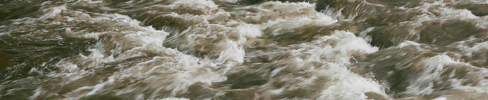

Home – Research – Papers – Teaching – Notes
Courses – Undergraduate – Photos – Blog

The crumpling
transition of active tethered membranes with A. Cacciuto
Soft Matter 19.28 (2023)
Rectification of
confined soft vesicles containing active particles with A.
Cacciuto
Soft Matter 19.2 (2023).
Rigidity
transitions in zero-temperature polygons with A. Parker and J.
M. Schwarz
Physical Review E 106.5 (2022).
Effective forces
between active polymers with A. Cacciuto
Physical
Review E 105.3 (2022).
Buckling without
bending morphogenesis: Nonlinearities, spatial confinement, and
branching hierarchies with J. M. Schwarz
New Journal
of Physics 23.6 (2021)
Loops versus lines
and the compression stiffening of cells with Katarzyna Pogoda,
Anne van Oosten, T. A. Engstrom, A. E. Patteson, P. A. Janmey and
J. M. Schwarz
Soft Matter 16 (2020)
APS March meeting 2020
presentation here
Fourier Transform
of Electric Signal using Kundt’s Tube with Srijit Paul
Student Journal of Physics, Vol. 6, No. 2, Apr-Jun. 2017